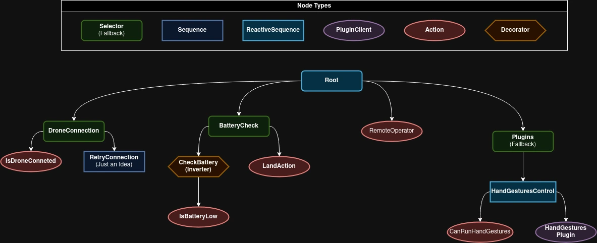

Tello Behavior Tree
The tello_bt package implements a behavior tree (BT) for managing and executing plugins that define various behaviors for the Tello drone. This package uses the py-trees library to structure and run the behavior tree.
What is a Behavior Tree?
A behavior tree is a model that organizes defined behaviors into a tree structure, allowing them to be executed (or "ticked") in each iteration. While similar to a Finite State Machine (FSM), a behavior tree supports more complex scenarios with greater flexibility and simplicity.
In py_trees, a behavior tree is built using nodes, decorators, and composites, each with specific functionality to control the flow of execution. For more information, visit py_trees documentation
Common Nodes Used
Action Nodes
Action nodes perform specific tasks when ticked. They execute actions and return a status (SUCCESS, FAILURE, or RUNNING).
py_trees.behaviour.Behaviour: The base class for any node you desire to create which does not require ROS.tello_bt.nodes.actions.Action: The base class for any node you desire to create which relies on ROS.tello_bt.nodes.PluginClient: A node which is used to execute a plugin.
Condition Nodes
tello_bt.nodes.conditionals.CanRunPlugin: A conditional node which can be used to check if a plugin is currently selected to run.
Condition nodes check a condition and return SUCCESS if it is met, otherwise FAILURE.
Common Decorators Used
Decorators modify the behavior of their child node based on specific rules or conditions.
py_trees.decorators.Inverter: Inverts the result of the child node (e.g.,SUCCESSbecomesFAILURE).
Common Composites Used
Composite nodes are used to group multiple child nodes and control their execution flow.
-
py_trees.composites.Sequence: Executes its children in order until one fails. Returns:SUCCESSif all children succeed.FAILUREif any child fails.RUNNINGif a child is still running.
-
py_trees.composites.Selector: Executes its children in order until one succeeds. Returns:SUCCESSif any child succeeds.FAILUREif all children fail.RUNNINGif a child is still running.
-
py_trees.composites.Parallel: Executes all children simultaneously. Returns:SUCCESSif the required number of children succeed.FAILUREif too many children fail or if required conditions are not met.
Creating a Behavior Tree
By default, the behavior tree used is tello_bt.bt.DefaultBT. To create your own custom behavior tree, follow these steps:
- Create a New File: Add a new Python file in the
tello_bt.btdirectory and name it appropriately. - Define the
bootstrapFunction:- Your file must define a function named
bootstrap(ros_node: rclpy.Node) -> py_trees.behaviour.Behaviour.- This function will be called by the BT ROS node to load your behavior tree.
- It should return the root of your tree.
- Your file must define a function named
- Update Parameters: Modify the parameter file to set the
bt_namefield to your file name (without the.pyextension).
Example
Example
Python Code
import py_trees
from rclpy.node import Node
def create_tree(): # Leaf nodes
success_node = py_trees.behaviours.Success(name="Always Succeed")
failure_node = py_trees.behaviours.Failure(name="Always Fail")
# Decorator
invert_failure = py_trees.decorators.Inverter(child=failure_node)
# Composite
sequence = py_trees.composites.Sequence(name="Simple Sequence")
sequence.add_children([success_node, invert_failure])
return sequence
def bootstrap(ros_node: Node) -> py_trees.behavior.Behaviour:
tree = create_tree()
return tree
Parameters File
Explaining Default BT
Below is the graphical representation of the DefaultBT behavior tree.
Note
- Reactive sequence is a sequence without memory, meaning that it will always start from the first child.
- Sequence has memory, meaning if one of it's children returns
RUNNING, the next time it ticks, it will tick directly that child.

The structure and purpose of each part of the tree are as follows:
Root: DefaultBT
- Type: Sequence (no memory)
- Purpose: Ensures all the children (subsystems) are checked or executed in order.
1. Drone Connection Checker
- Type: Selector (no memory)
- Child:
IsDroneConnected - Purpose: Verifies if the drone is connected.
- If the connection is successful (
SUCCESS), it moves to the next step. - If the connection is not established (
FAILURE), the tree stops ticking and the sequence fails.
- If the connection is successful (
2. Battery Checker
- Type: Selector (no memory)
- Children:
IsBatteryLow: Checks if the battery is low. If it is, returnsSUCCESS.- Inverter (decorator) →
LandAction: If the battery is not low, the decorator inverts the result of theLandAction.- The
LandActionwould normally returnFAILURE(since landing is not required when the battery is okay), but theInverterconverts it toSUCCESS.
- The
- Purpose: Ensures that if the battery is low, the drone lands safely. Otherwise, it allows the behavior tree to continue execution.
3. Remote Operator
- Type: Action Node
- Name:
RemoteOperator - Purpose: Checks keyboard input from
tello_control_stationand change selected plugin from blackboard to hand gestures plugin if selected.- Alawas returns
SUCCESS
- Alawas returns
4. Plugins Selector
- Type: Selector (no memory)
-
Children:
- Hand Gestures Control (no memory):
CanRunPlugin: Checks if the "landmark_detector_node" plugin is enabled and can run.PluginClient: Executes the plugin responsible for hand gesture control, enabling drone interaction using visual gestures.
- Hand Gestures Control (no memory):
-
Purpose: Extends the drone's capabilities by enabling additional plugins, such as gesture control. If no plugin is active or available, this branch fails, but the rest of the tree can continue.
Example
# ...
class DefaultBT(py_trees.composites.Sequence):
# ...
def build_tree(self):
drone_connection = py_trees.composites.Selector(
"DroneConnection",
memory=False,
children=[
IsDroneConnected("IsDroneConnected"),
],
)
battery_checker = py_trees.composites.Selector(
"BatteryChecker",
memory=False,
children=[
IsBatteryLow("IsBatteryLow", self.node),
py_trees.decorators.Inverter(
"LandActionInverter", LandAction("LandAction", self.node)
),
],
)
remote_operator = RemoteOperator("RemoteOperator", self.node)
plugins = py_trees.composites.Selector(
"Plugins",
memory=False,
children=[
py_trees.composites.Sequence(
"HandGesturesControl",
memory=False,
children=[
CanRunPlugin("CanRunHandGestures", "landmark_detector_node"),
PluginClient(
"HandGesturesPlugin", "landmark_detector_node", self.node
),
],
)
],
)
self.add_children([drone_connection, battery_checker, remote_operator, plugins])
def bootstrap(ros_node: Node) -> py_trees.behaviour.Behaviour:
return DefaultBT(ros_node)